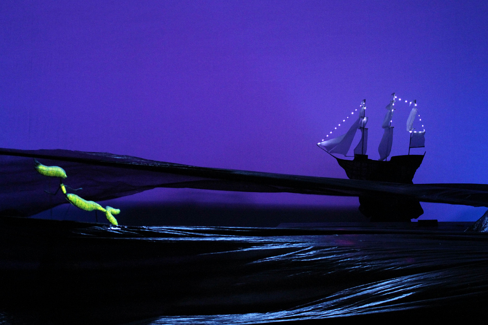

Theatre Works
Selected compositions for theatre productions
Original music for theatre projects, productions and studies.
Children’s theatre production (Kazan)
Original music for a long-running repertory production in a state theatre.

excerpt 01